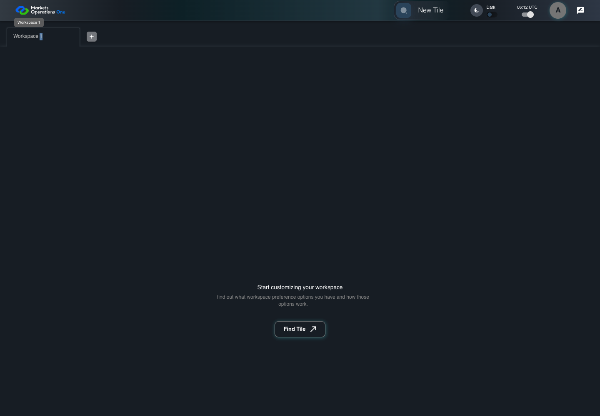

UI-SHL-008 double-click focuses workspace name
PASS · application/run-050/ui-shl-008-double-click-focuses-workspace-name-e68dffc5b9b9-attempt-1 · ACTUAL_APPLICATION_LOCAL_SERVICES
Actual current MFE; controlled accepted login, validation, and activity renewal; unsigned fixture JWT; explicit stored workspaces. No real identity, server authorization, or backend persistence verification.
2026-10-22T06:12:07.849Z to 2026-10-22T06:12:10.782Z
Assertions and result · Artifact manifest · Exact run inputs and source hashes
Result SHA-256:24872f1259a37eae53e8dfb7b09be1cd01a1fd8d9657aa6ae321737ed9cce3b7Machine observations
- stored-workspace-setup.json
13ce6caba9a7bf42addcced441ba4b8dbb8365a0f25b287726d783a77e510eb0
Screenshot capture: CAPTURED. Named frames: 5.
Step screenshot evidence: COMPLETE. 4/4 canonical steps have execution screenshots.
Canonical step timeline
Given User A is authenticated as fixture UI-USER-01 with the case-specific permissions
Execution: PASSED.
1. step-01 Visible state after step 1: Given User A is authenticated as fixture UI-USER-01 with the case-specific permissions
2026-10-22T06:12:09.853Z · 1440×1000
Step: /Users/lushevol/code/github/ratan-release-impact/workbench/tasks/ui-test-coverage-20261022/test-cases.md:5621
SHA-256:b0d8bd3f9faf25b9831e8e67fc0e92f9f9cff7591bb746b16bfcb116162ff137And W1 is selected
Execution: PASSED.
2. step-02 Visible state after step 2: And W1 is selected
2026-10-22T06:12:10.003Z · 1440×1000
Step: /Users/lushevol/code/github/ratan-release-impact/workbench/tasks/ui-test-coverage-20261022/test-cases.md:5622
SHA-256:b0d8bd3f9faf25b9831e8e67fc0e92f9f9cff7591bb746b16bfcb116162ff137When User A double-clicks tab with source identity "Workspace Name textbox value Workspace 1" inside the shell tablist named "workspaces"
Execution: PASSED.3. step-03 Visible state after step 3: When User A double-clicks tab with source identity "Workspace Name textbox value Workspace 1" inside the shell tablist named "workspaces"
2026-10-22T06:12:10.170Z · 1440×1000
Step: /Users/lushevol/code/github/ratan-release-impact/workbench/tasks/ui-test-coverage-20261022/test-cases.md:5623
SHA-256:2805a7b7196abb19211a00297f6dbc2f866491276ae0babf6d31fa96a72a4427Then textbox named "Workspace Name" inside the W1 workspace tab has focus
Execution: PASSED.
4. step-04 Visible state after step 4: Then textbox named "Workspace Name" inside the W1 workspace tab has focus
2026-10-22T06:12:10.265Z · 1440×1000
Step: /Users/lushevol/code/github/ratan-release-impact/workbench/tasks/ui-test-coverage-20261022/test-cases.md:5624
SHA-256:341184d6f7fbe92be4aaec621b5f5134f3a4c4b5647c9bece2a27c3bfe96cd58
Additional named frames
The final visible state after the named test assertions.
2026-10-22T06:12:10.413Z · 1440×1000Step: Test source: /Users/lushevol/code/github/ratan-release-impact/workbench/e2e/audit-specs/workspace-edges.spec.ts:53
SHA-256:
66faed4c3a8f5375bf5358d192a8dc2a7c5234d9d47e77ee6aa2beb4bd944a89Screenshots establish visible state only. Assertions and traces support functional claims.